Create HelloMaker component with OPRoS Component Editor, an OPRoS Tool
- To compile OPRoS component in this editor, start eclipse with
double click of OPRoSRun.bat in Windows
- OPRoSRun.bat can be generated by double click of
OPRoS_CE_Runner.jar
- Click "Component Editor" OPRoS eclipse perspective
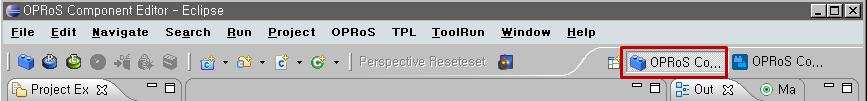 - Check compile condition in "Preference"
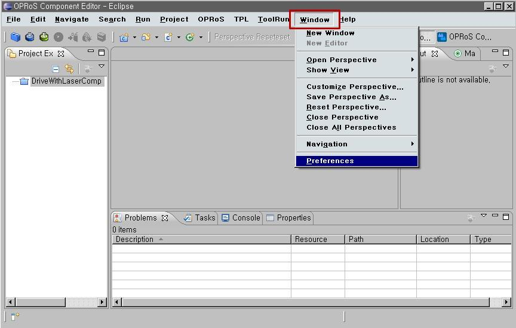 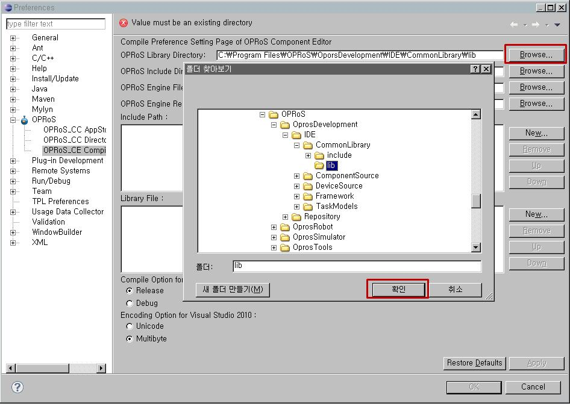
- Click OPRoS Component Creation Button
- Type a project name: HelloMaker
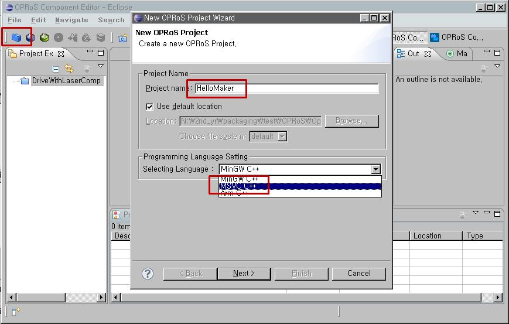
- Select compiler: MSVC++
- Type component name: HelloMaker
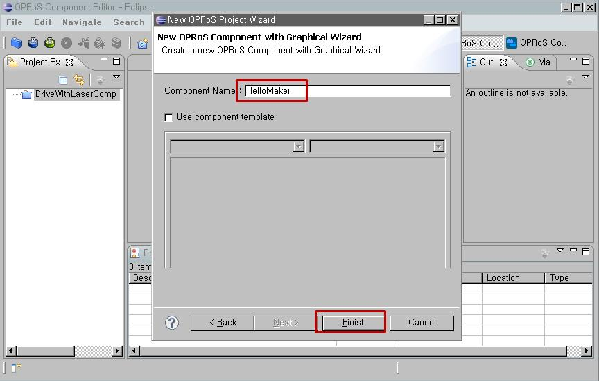
- Add a property: Drag "Property" in Palette into the same
symbol part in the blue block (OPRoS component)
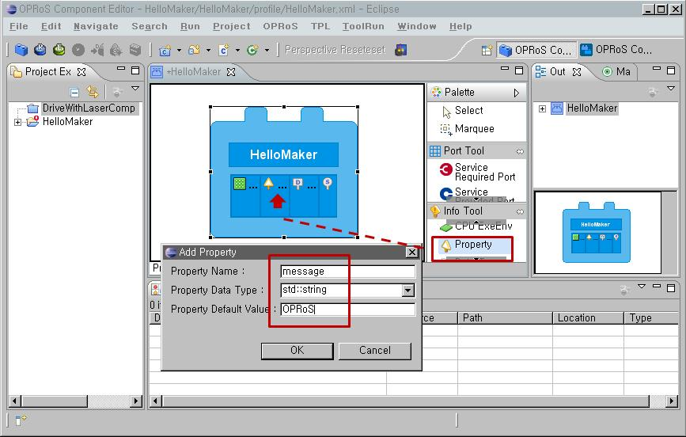
- Property Name: message, Property Type: std::string, Property Default Value: OPRoS
- This entered properties added in property section in the component profile, HelloMaker.xml
- Property can be used for user inputs or initial settings for
different devices.
- Add a service type: MessagePrint
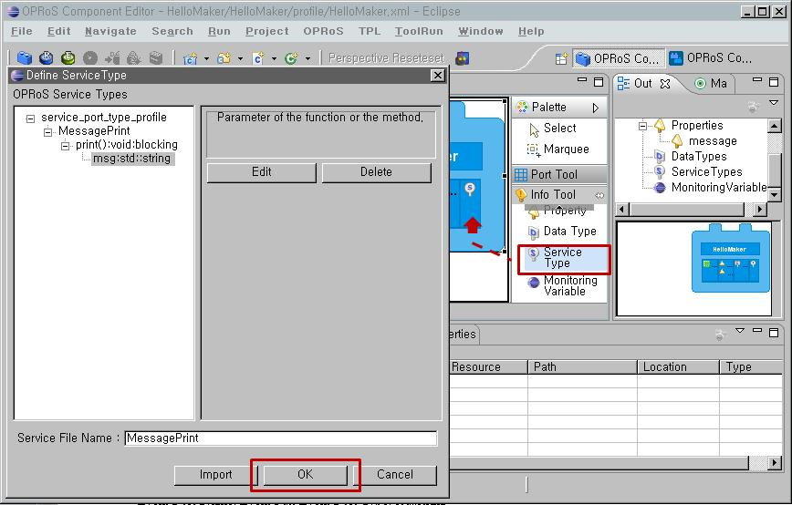- Service Name: print, Return-type: void, Parameter Name: msg, Parameter Type: std::string
- This creates service port profile, MessagePrint.xml, that generates service port header files, MessgePrintRequired.h and MessagePrintProvided.h
- One servie type can have many methods for services.
- Add a service required port: Drag "Service
Required Port" into the edge of the blue block (OPRoS component)
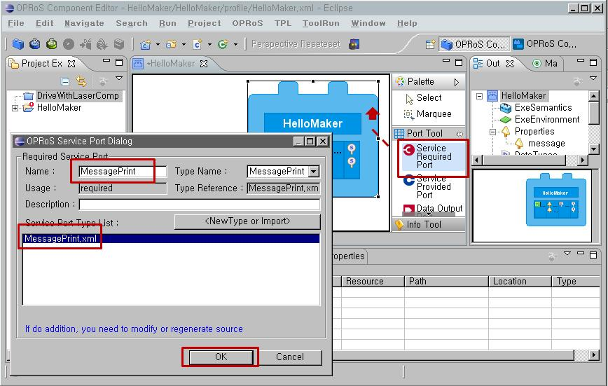- Service Port Name: MessagePrint, Service Port Type:MessagePrint
- Add a data output port: Drag "Data Output
Port" into the edge of the blue block (OPRoS component)
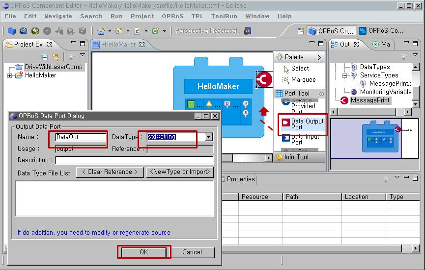- Data Port Name: DataOut, Data Port Type: std::string
- Add an event output port: Drag "Event Output
Port" into the edge of the blue block (OPRoS component)
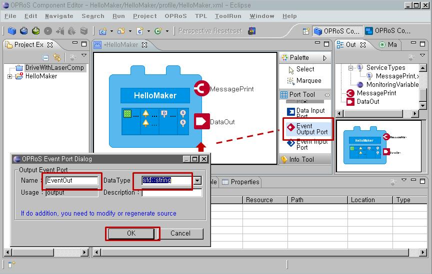
- Event Port Name: EventOut, Event Port Type: std::string
- Save the code with Ctrl+S, switch the tap "Profile View" to
"Source View", or "Header View", then compile to see generated
code
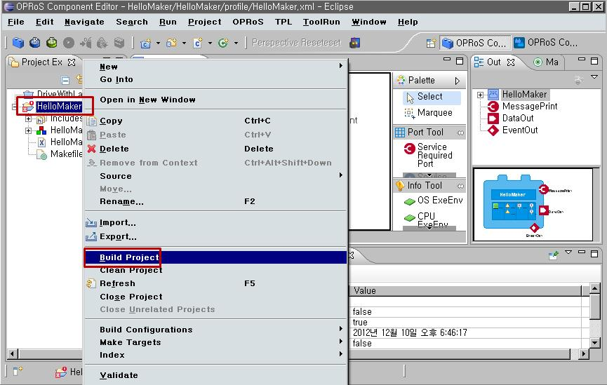
- Add user code
- HelloMaker.h
- int counter;
- HelloMaker.cpp
- onStart()
- counter=0;
- onExecute()
- counter++; // periodically incremented
- std::string msg = "Hello";
- msg=getProperty("message"); // read value of property item "message" in component profile
- std::stringstream outdata;
- outdata<<msg<<"["<<counter<<"]";
- if(counter%3==0) ptrMessagePrinter->print(outdata.str()); // service port call
- else if(counter%3==1) DataOut.push(outdata.str()); // insert the data to the data port queue of receiver component
-
else {
-
EventData<std::string> evtData;
-
evtData.setId("messageId"); // set event id
-
evtData.setContentData(outdata.str()); // set event data
-
EventOut.push(&evtData); } // insert the event to the receiver component event port
- Compile the component as #12
- Copy the component profile, OPRoS\OprosTools\workspace\HelloMaker\profile\HelloMaker.xml,
and the component binary, OPRoS\OprosTools\workspace\HelloMaker\Release\HelloMaker.dll
into OPRoS\OprosDevelopment\Repository|Components